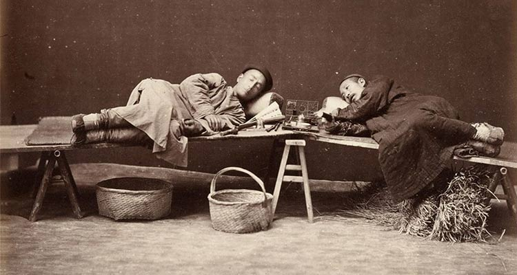
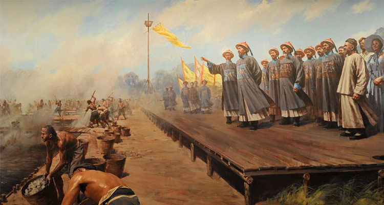
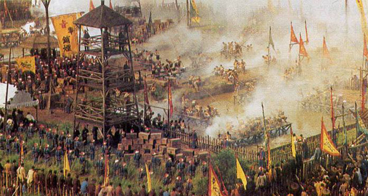
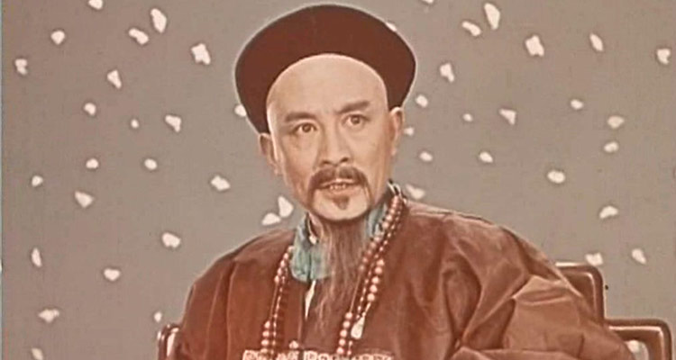

今天是中华禁烟节，那么就不能不提虎门销烟；如果说一个人掀开了中国的近代史，那就是林则徐。十九世纪三、四十年代的中国看起来风平浪静，实际上已是山雨欲来。道光皇帝常常冥思苦想，真可谓人和人不能比，同样是皇帝，爷爷乾隆过得多滋润，春游江南夏避山庄，秋围狩猎冬尝琼浆，没见他做出如何壮举，可就是盛世繁华，直至八十六岁才肯退位。可到了孙子这里，怎么就朝势衰弱官吏萎靡，鸦片泛滥武备不兴呢。
要说道光还是很以身作则的，上任以来，承德避暑、木兰秋围一次都没去，身上的衣服破了让老婆补了再穿，但朝廷已“几无御敌之兵，且无充饷之银”了。而外面的世界好像已经变得扑朔迷离，不知道从哪里冒出来的夷人拿走了天朝特产，换来的是人见人爱的鸦片，可国人一上瘾竟变成东亚病夫了。道光决定派林则徐为钦差大臣到广州禁烟。
当鸦片如潮水般涌来，白银如潮水般外流。道光便坐不住了，急命林则徐禁烟。林则徐开始了大规模的禁烟。当英美不法商人不完全交出鸦片时，林老贴出告示：若鸦片一日未决，本大臣一日不回，誓与此事相始终。他们只好交出鸦片。最终虎门销烟成功告捷。
历史的潮流不可阻挡。这次成功竟然是失败的开始。英国国会通过了对华用兵的提案，发动了鸦片战争。首先是进攻广州，在林则徐的精心布局，战士们的英勇抗击下，英国人无懈可击，继而北上进攻。尽管中国士兵视死如归，但英国人一直打到下关江面，扬言进攻南京。历史再次上演杀晁错以平七国之乱的故事。汉朝都没办成的事，清朝就更不行了。林老没被杀，而是流放。如果英军退了，那也值了，可这能阻挡条约的签订吗？当然不能。
一个三朝元老，一个民族英雄，一个为朝廷为人民忙了几十年的人，却走上了流放的路。当他走到河南时恰逢黄河泛滥，他又挑起了治水的重担，而且治理的很好，受到了普遍的赞扬。他理解朝廷，他以德报怨。在林则徐贬谪伊犁途中，他留下了“苟利国家生死以，岂因祸福避趋之”这句名言，留给历史一个背影，二千年的封建帝国大厦将倾，从此步入多难兴邦。
1、一个人一件事能被记入丰碑就一定不是凡人小事；
2、历史不会忘记他，中华民族带着他留下的精神一路前行。